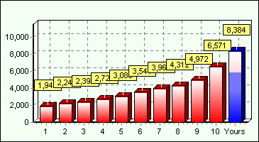
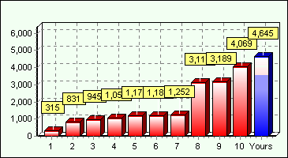
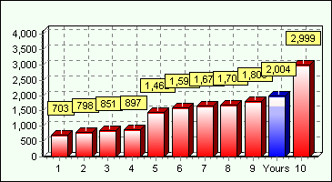

|
| CPU Bench Result | |||||||||||||||||||||
|
| MDIPS Comparison | ||
|  | 1. Intel Celeron 700 MHz 2. AMD Duron 800 MHz 3. AMD Thunderbird 850 MHz 4. AMD Thunderbird 900 MHz 5. Intel Pentium 4 1.6 GHz 6. Intel Pentium 4 1.7 GHz 7. Intel Pentium 4 1.8 GHz 8. AMD Athlon XP 1600+ 1.4 GHz 9. AMD Athlon XP 2000+ 1.67 GHz 10. Intel Pentium 4 3.0 GHz |
| MWIPS Comparison | ||
|  | 1. Intel Celeron 700 MHz 2. AMD Duron 800 MHz 3. AMD Thunderbird 850 MHz 4. Intel Pentium 4 1.6 GHz 5. Intel Pentium 4 1.7 GHz 6. AMD Thunderbird 900 MHz 7. Intel Pentium 4 1.8 GHz 8. Intel Pentium 4 3.0 GHz 9. AMD Athlon XP 1600+ 1.4 GHz 10. AMD Athlon XP 2000+ 1.67 GHz |
| Speed Comparison | ||
|  | 1. Intel Celeron 700 MHz 2. AMD Duron 800 MHz 3. AMD Thunderbird 850 MHz 4. AMD Thunderbird 900 MHz 5. AMD Athlon XP 1600+ 1.4 GHz 6. Intel Pentium 4 1.6 GHz 7. AMD Athlon XP 2000+ 1.67 GHz 8. Intel Pentium 4 1.7 GHz 9. Intel Pentium 4 1.8 GHz 10. Intel Pentium 4 3.0 GHz |